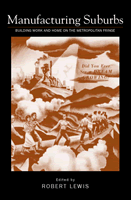

Rethinking the history of suburbanization
Rethinking the history of suburbanization


 Rethinking the history of suburbanization
Rethinking the history of suburbanization

|  |
Manufacturing SuburbsBuilding Work and Home on the Metropolitan Fringeedited by Robert Lewispaper EAN: 978-1-59213-086-3 (ISBN: 1-59213-086-0) |
"At base, the arguments set out in this collection challenge a considerable amount of the collective wisdom about North American suburbs and will stimulate scholars and students to rethink what suburbs consist of and what the relationships are between cities and suburbs.... This work strikes at the heart of scholars' thinking about what suburbia looks like and was/is and who or what lived/lives there."
—Mary Corbin Sies, University of Maryland
Urban historians have long portrayed suburbanization as the result of a bourgeois exodus from the city, coupled with the introduction of streetcars that enabled the middle class to leave the city for the more sylvan surrounding regions. Demonstrating that this is only a partial version of urban history, Manufacturing Suburbs reclaims the history of working-class suburbs by examining the development of industrial suburbs in the United States and Canada between 1850 and 1950. Contributors demonstrate that these suburbs developed in large part because of the location of manufacturing beyond city limits and the subsequent building of housing for the workers who labored within those factories. Through case studies of industrial suburbanization and industrial suburbs in several metropolitan areas (Chicago, Baltimore, Detroit, Pittsburgh, Los Angeles, San Francisco, Toronto, and Montreal), Manufacturing Suburbs sheds light on a key phenomenon of metropolitan development before the Second World War.
Excerpt available at www.temple.edu/tempress
"In Manufacturing Suburbs, edited by Robert Lewis, eleven authors have done a pioneering and impressive job of sorting out some of the many complexities of industrial suburbanization in the United States and Canada during the century from 1850 to 1950.... All in all, Manufacturing Suburbs is an excellent study that should lead the way to further research into a hitherto neglected aspect of suburban history."
—The Journal of American History
"The foremost merit of the book lies in the quality of the different contributions, written by major researchers in the field of urban history. Together, they provide a comprehensive view of the pre-World War II evolution of manufacturing in North American metropolitan regions and of its impact on their urban structure."
—Urban Studies
"There has been a need for synthesis in the sprawling field of suburban history, but most of what has been written about North American suburbia concerns mainly middle-class residential enclaves. Manufacturing Suburbs corrects this by focusing on the industrial and working class facets of suburban development from the mid-1800s up to the mid-1900s."
—Urban History Review
"The objectives of this collection of theoretically inclined and empirically defended essays by well-respected scholars of suburban-industrial growth are successfully met... The great value of this book, then, is the successful melding of a North American perspective that establishes a meaningful benchmark for further research in the field."
—The Canadian Historical Review
Preface
1. Industry and the Suburbs – Robert Lewis
2. Beyond the Crabgrass Frontier: Industry and the Spread of North American Cities, 1850-1950 – Richard Walker and Robert Lewis
3. The Emergence of Industrial Districts in Mid-Nineteenth-Century Baltimore – Edward K. Muller and Paul A. Groves
4. Model City? Industry and Urban Structure in Chicago – Mary Beth Pudup
5. A City Transformed: Manufacturing Districts and Suburban Growth in Montreal, 1850-1929 – Robert Lewis
6. Industry Builds Out the City: The Suburbanization of Manufacturing in the San Francisco Bay Area, 1850-1940 – Richard Walker
7. Industrial Suburbs and the Growth of Metropolitan Pittsburgh, 1870-1920 – Edward K. Muller
8. The Suburbanization of Manufacturing in Toronto, 1881-1951 – Gunter Gad
9. "Nature's Workshop": Industry and Urban Expansion in Southern California, 1900-1950 – Greg Hise
10. "The American Disease of Growth": Henry Ford and the Metropolitanization of Detroit, 1920-1940 – Heather B. Barrow
11. Suburbanization and the Employment Linkage – Richard Harris
Notes
About the Contributors
Index
Robert Lewis is Associate Professor of Geography at the University of Toronto. He is the author of Manufacturing Montreal: The Making of an Industrial Landscape, 1850 to 1930 and co-editor of Urban History Review.
Contributors: Heather Bryce Barrow, University of Chicago, Gunter Gad, University of Toronto, Paul Groves, formerly at University of Maryland, College Park, Richard Harris, McMaster University, Greg Hise, University of Southern California, Edward Muller, University of Pittsburgh, Mary Beth Pudup, University of California, Santa Cruz, Richard Walker, University of California, Berkeley, and the editor.
Urban Studies
American Studies
© 2015 Temple University. All Rights Reserved. This page: http://www.temple.edu/tempress/titles/1679_reg.html.